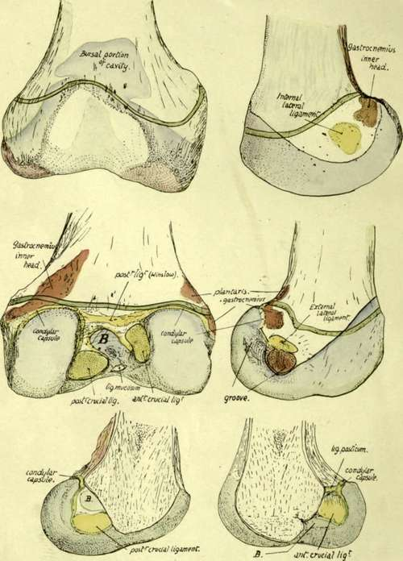
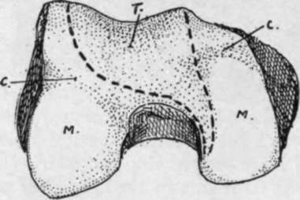
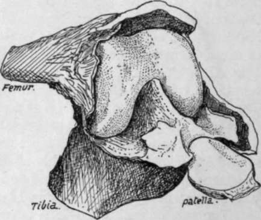

Lower End
Description
This section is from the book "The Anatomy Of The Human Skeleton", by J. Ernest Frazer. Also available from Amazon: The anatomy of the human skeleton.
Lower End
Notice the differences tetween the condylar masses. The outer is thicker and stronger than the inner, for it has more to do with the direct support of weight and transference to the tibia. On the other hand, looking at them from below, the inner is seen to be longer and curved ; this is probably in association with the terminal rotation that occurs round the attachment of the anterior crucial ligament when the leg is fully extended, when the inner part of the tibia moves forward on the femur-or the femur backward on the tibia, if the foot is on the ground--while the outer condyle is held in position by the attachment of the anterior crucial ligament to it. The attachments of the two crucial ligaments are shown in Fig. 122, and the centre of the curve made by the inner condyle is on the attachment of the anterior ligament to the outer condyle.
Fig. 122.-Lower end of right femur. The green line indicates the epiphyseal line. B, the bursa-like recess of the trochlear part of the cavity which extends in between the two crucial ligaments. The upper part of the trochlear cavity is formed by the addition of a bursa developed deep to the Crureus ; this portion is often somewhat separated from the main cavity by fatty synovial folds. The lower figures show the two halves of the lower end divided down the centre.
The two condyles are on the same horizontal level when the bone is in its natural position, so that a femur placed with its condyles on the table is in the inclined direction that it occupied in the body. It makes in this way an angle of about 9 degrees with the vertical, a little greater in woman, and at the same time sloping downward and forward at an angle of about 4 degrees or 5 degrees with the transverse vertical plane.
The popliteal surface is limited below by the intercondylic ridge to which the posterior ligament is attached. It is covered in for the most part by the belly of Semimembranosus and externally by Biceps. Observe that the inner head of the Gastrocnemius encroaches on this space, there being a tuberculated roughness for it on the bone, so that the inner superior articular artery crosses over this head, whereas the outer vessels lie above the level of the origin of the outer head (Fig. 120).
When the inner vessels have crossed the inner head they come to the tendon of Adductor magnus on the supracondylar line : piercing this close to the bone they find themselves under cover of Vastus internus, which we have seen arises from this tendon and not from the bone. The outer vessels lie on bone all the way, passing deep to Biceps, Ilio-tibial band, and Vastus externus.
The two heads (Fig. 120) of Gastrocnemius arise largely from the vertical capsular fibres that cover the back of the condylar recesses of the joint, but they each reach the bone above : the outer tendon is attached to the well-marked facet seen in Fig. 122, and the inner tendon, in addition to the popliteal origin already mentioned, has a facet of attachment in a corresponding situation behind and below the Adductor tubercle (Fig. 122). There is usually a small sesamoid bone or cartilage to be found in the tendinous origin of the outer head, and rarely one in the inner head in old people. The " facets " may be looked on as representing the positions of small bursal prolongations from the joint deep to these sesamoids.
Below the Gastrocnemius facet on the outer condyle is a tubercle for the external lateral ligament, and below this again is a groove from the front end of which the Popliteus arises. The inner condyle is prominent below the Adductor tubercle : the internal lateral ligament is attached below the most prominent spot.
The side of each condyle is covered below and in front by synovial membrane, which is reflected on to the capsule along an oblique line directed downwards and backwards. The line passes to the under side of the attachment of each lateral ligament : behind this it turns up to become continuous with the attachment of the condylar portion of the capsule. Each condylar capsule extends up to the bone a little above the articular surface, and is lost in the intercondylar fossa by becoming continuous with the areolar tissue behind the crucial ligament and with the ligaments themselves. The synovial sac of the condylar recesses does not extend further toward the intercondylar fossa than the margin of the articular surface, but the main cavity extends back for some distance from the trochlear surface on to the crucial ligaments and comes into relation with the floor of the fossa between these ligaments (Fig. 122). The cartilage-covered surfaces rest below on the interarticular (semilunar) fibro-cartilages, and the impressions made by these are visible (Fig. 123) in the recent state, and usually also in the dry bones.
Fig. 123.-Lower end of right femur. T. trochlear surface, for patella, extending along inner condyle as an area with which patella articulates in flexion ; M. menisco-tibial surfaces for resting on tibia in extension. The fibro-cartilages make marks by their front borders on the femur at c. c.
The whole continuous articular surface can be divided into three portions, two condylar and one trochlear surface, the latter being for the play of the patella ; a prolongation of the trochlear surface downwards and backwards along the inner condyle, shown in Fig. 123, is in contact with the patella when the leg is flexed. These three parts were originally distinct, and the remains of the dividing walls are seen in the ligamenta alaria and mucosum. Ligamentum mucosum is attached to the front end of the intercondylic fossa, and extends from this as a synovial band to the lower end of the patella : it marks the line of the septum separating the two condylar cavities, and the ligamenta alaria are remains of the walls cutting them off from the trochlear sac (Fig. 124).
The whole lower end is formed from a single centre of ossification, making a pressure epiphysis which is one of the earliest of this class to appear in the body. It is formed in the middle of the cartilaginous end at or just before birth, a fact of some interest and importance in certain medico-legal inquiries. The epiphysis is that of the growing end of the bone, and the epiphysial line (Fig. 122) runs through the Adductor tubercle, above the Gastrocnemius facets, and a little distance above the articular surfaces, curving slightly downwards on the sides of the condyles. Thus there are attached to the epiphysis :-
(1) The posterior ligaments of the capsule and the lateral ligaments ;
(2) Crucial ligaments and Ligamentum mucosum ;
(3) Outer head and part of inner head of Gastrocnemius, with Plantaris in part;
(4) Popliteus. The greater part of the epiphysis is in relation with the joint cavity, it being only otherwise covered by the Vasti on each side over a small area.
Fig. 125 is a scheme to illustrate the disposition of lamellae in the construction of the bone.
The femur can be directly examined only towards its ends during life, its shaft being indirectly palpable through the mass of extensor muscles. The great trochanter is easily felt, being only covered over its greater part by the aponeurosis of the Gluteus maximus, although the tendon of Gluteus medius somewhat obscures its upper front portion. Its breadth, etc., can be appreciated by the fingers, and comparison made with the other side. Careful estimation of its relative position and level is most useful in differential diagnosis of lesions in the neighbourhood ; its upper extremity just touches, normally, a line drawn between the tuber ischii and the anterior superior iliac spine (Nekton's line), and a higher position on one side points to lessening of the vertical difference between the acetabular and trochanteric levels. The top of the trochanter is about on a level with the middle of the acetabulum. The rounded head of the bone lies in its joint behind the Psoas, where its mass can be felt, or its absence ascertained in states associated with such a condition. The joint lies about the centre of the line drawn from the pubic spine to the trochanter when the limb is not too much everted. The side aspects of the two condyles can be easily examined, covered by relatively thin aponeuroses. It should be remembered that the front and lower parts of these aspects of the condyles are covered by lateral recesses (Fig. 122) of the synovial sac ; this moves down with the patella when the leg is flexed, a fact utilised under certain surgical circumstances. The adductor tubercle can be felt on the upper part of the inner prominence, and the external lateral ligament is distinctly recognised on the outer side on bending the knee. The lower edges of the condyles, if not found at first, can be placed at once on flexion, and their front aspects can be examined to some extent by relaxation of the extensors and side-to-side movement of the patella.
Fig. 124.-A left knee at birth, showing an unusual condition of the ligam. mucosum, which is represented by a complete septum between the two condylar parts of the cavity. The ligamenta alaria are seen as wing-like folds at each side of the lower end of the patella : they are remains of septa shutting off the trochlear from the condylar cavities.
Continue to: